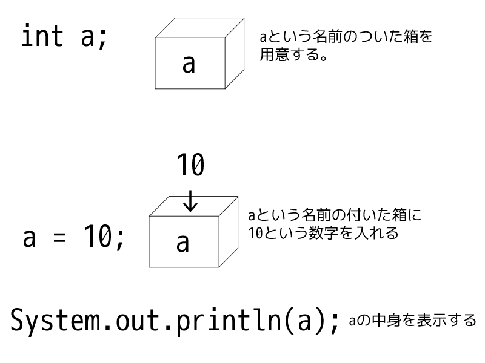

・2-1部 変数とは
・2-2部リテラルについて
・2-3部コラム:リテラルの応用記法
第1章 2部 変数とは
Javaだけでなく、すべてのプログラム言語には、変数というものが存在します。
いや、存在しない言語は、あるにはあります。
それは、まあ、僕が今作ってるこのページ、HTMLですが、HTMLをプログラム言語といっていいのかわかりませんし。
(HTMLはマークアップ言語ですね、はい。)
ちなみにらいちたそはHTMLやJavaScriptは苦手です。
あ、JavaScriptとJavaを一緒にしないでくださいね。
で、その変数なんですが、まあ変数ってのは、値を一時的に格納する物って考えてください。
えっと、なんて言おうか、まぁ、先にコードを見てください
int a ;
a = 10 ;
まぁ。簡単ですね。で、この文の意味は、int 型の、a という名前の付いた、変数を用意し、
その中に10を入れている。
ってことです。
試しに次のコードを実行してみましょう。
public class Test1_2_1{
public static void main(String [] args){
int a;
a = 0;
System.out.println(a);
}
}
あ、一つ大事なことをいうのを忘れてました。
クラス宣言で宣言したクラス名とファイル名を同じにしなくてはいけません。
つまり、
public class Test1_2_1{
/* ... */
}
この場合、Test1_2_1.java というファイル名にしなくてはいけないんです。 もっと言えば、Class Example だった場合ファイル名を Example.javaにしないといけないんです。
これはJava界における絶対のルールなんです。
ですので、守ってください。
本当は例外がありますが、それはクラスについての解説の時に
では、コンパイルして、実行してみてください。
実行コードは、コマンドプロンプトで
javac Test1_2_1.java
java Test1_2_1
この二つのコマンドですね。
さぁ、なんと表示されたでしょうか。
どこも間違ってなければ10と表示されたはずです。
さぁ、察しが良い方はもう気づいていると思いますが、確認のため、10を好きな整数に書き換えてみてください。
入力された数字が表示されるはずです。
そうです。これが変数です
ん？よくわからない？
そんな方のために例を用意してあります。

まぁ、何も言わないでわかりますよね。
箱に数字を入れているだけです。
変数は箱です！！
で、変数はこんな書き方もできます
int a = 10;
まあ、多分わかるでしょう。
aという名前の付いた変数に10という数字を入れて用意するんです。
つまり
int a; a = 10;を1行に納めただけなんです。
つぎ、
public class Test1_2_2 {
public static void main(String [] args){
int a = 10;
a = 255;
System.out.println(a);
}
}
もう、言わなくてもわかりますよね。表示されるのは 255 です。
あともちろん -14 とかにすれば、マイナスの値になりますよ。
なんとなくイメージついたかな？
じゃあ次、文字を変数に入れましょう。
public class Test1_2_3 {
public static void main(String [] args){
String a = "HelloWorld";
System.out.println(a);
}
}
このコードを実行してみてください。ちゃんとあっていれば、HelloWorldと表示されるはずです。
さっきとは若干違いますよね。
さっき変数の宣言はint a;と言いました。
ですが、嘘です。
あれはint型の変数の宣言にすぎません。
本当は
変数の型名 変数名 ;
変数の型名 : その変数に入れられる値の種類 変数名 : 変数の名前なんです。
型名、値の種類って何ぞやって思いましたね？
変数にはどんな値でも入れられる物じゃないんです。
最初に決められた種類の値しか入れられないんです。
例えば、ここには数値しか入りません。って書いてある箱に文字は入れたくありません。
つまり、そういうことなんです。
変数には、最初に決めた種類のものしか入らないんです。
数値なら数値しか、文字なら文字しか入らないんです。
では、その種類の指定はどうするのか。
それは、名前指定です。
型にはすべてに名前があります。
その名前を指定して変数を宣言するのです。
では、型は何があるのか、表にまとめました。
| 型名 | 種類 | 大きさ[bit] | 表記例 | 詳細 | ラッパークラス |
|---|---|---|---|---|---|
| byte | 8ビット符号付整数 | 8bit | byte a = 10; | -128～127の間の整数 | java.lang.Byte |
| short | 16ビット符号付整数 | 16bit | short a = 1000; | -32768～32767の間の整数 | java.lang.Short |
| int | 32ビット符号付整数 | 32bit | int a = 186; | -1247483648～1247483647の間の整数 | java.lang.Integer |
| long | 64ビット符号付整数 | 64bit | long a = 1000000000L; | -9223372036854775808～9223372036854775807の間の整数 | java.lang.Long |
| float | 32ビット浮動小数点数 | 32bit | float a = 10.15F; | 負の値は -3.4028235E+38 ～ -1.401298E-45、正の値は 1.401298E-45 ～ 3.4028235E+38 の範囲。少しアバウト | java.lang.Float |
| double | 64ビット倍精度浮動小数点数 | 64bit | double a = 10.0115D; | 負の値は -1.79769313486231570E+308 ～ -4.94065645841246544E-324、 正の値は 4.94065645841246544E-324 ～ 1.79769313486231570E+308 の範囲。floatよりも正確 |
java.lang.Double |
| boolean | 論理型 true または false | 1bit | boolean a = true; または boolean a = false; | 正しい(true)か偽り(false)のみ | java.lang.Boolean |
| char | 文字 16ビット符号なし(Unicode)文字 | 16bit | char a = 'A'; | Unicode文字1文字。 | java.lang.Character |
| void | 型無し | 0bit | 代入不可 | 戻り値が無いことを意味する | java.lang.Void |
以上です。
え、さっきのStringはどこ行ったのかって？
あのこは特別なんです。
何が特別なのかはまた今度解説します。
まあ、別枠なので、上の表には含めませんでしたが下に書いておきますか。
| 型名 | 種類 | 大きさ[bit] | 表記例 | 詳細 | クラス |
|---|---|---|---|---|---|
| String | 文字列 | 大きさに決まり無し | String a = "文字列"; | 文字列 | java.lang.String |
さあ、よくわからない単語がいくつか出てきましたね。
まずプリミティブ型変数とは何か、からですね。
プリミティブ型変数とは、intなどの変数を総省するのですが、
今は、どんなもの、ってことはいいです。
後で、クラスについて解説するときにまた合わせて説明するので。
とりあえず、プリミティブ型変数というのがあって、表の中のものはプリミティブ型変数ということを頭に入れておいてください。
で、下の、参照値型変数とは何か。
これもクラスについて解説するときに合わせて説明します。
これも、今はこういうのがあるということだけ頭に(ry
で、ほかにも、ビットだとか、ラッパークラスだとかありますが、これも今はスルーで。
ビットについては、このページの下に入れておきます。
ビットについて知るにはまず2進数についての理解が必要ですが...まあ、そこらへんも含めて解説します。
で、voidについても、また別の機会に(メソッドについての時にね)
void君だけは、型であって型でない不思議な子なんです。
リテラルについて
これらの値を総称して、リテラルと言います。
ただし、リテラルは後ろにつくLや、D、前後に付く'や"も含みます。
それらの文字などは、リテラルのデータ型を決めるものです。
どの表記でどのデータ型のリテラルになるのかをまとめてみました。
| リテラルの種類 | 表記例 | 変数型 | コード例 |
|---|---|---|---|
| 整数 | 334 | int | int a = 334; |
| 大きい整数。末尾がL(l) | 5548789L | long | long a = 5548789L; |
| 小数点付き数値(制度は低め)末尾がF(f) | 15.548F | float | float a = 15.548F |
| 小数点付き数値(制度の高い少数)末尾はD(d) もしくは無し | 3.14159D もしくは 3.14159 | double | double a = 3.14159; |
| true(真)またはfalse(偽) | true もしくは false | boolean | boolean a = true; |
| 引用符(シングルクオーテーション ' )で囲まれた文字 | '雷' | char | char a = '雷'; |
| 二重引用符(ダブルクオーテーション ")で囲まれた文字列 | "あぁ^～心がぴょんぴょんするんじゃぁ^～" | String | String a = "あぁ^～心がぴょんぴょんするんじゃぁ^～"; |
ですね。
特にchreに二重引用符を使ったりして(コンパイル)エラーになることが多いので気を付けてください
あと、byteやshort用のリテラルの種類は存在しません。
byteやshort等はそのままint用のリテラルが使用可能です。
まぁ、結論から言うと
1 と 1L と 1.0F と 1.0 と '1' と "1" は全くの別物ってことです。
コラム:整数リテラルの応用記法
整数リテラルの先頭に 0xをつけると16進数。
0をつけると8進数
0bをつけると2進数表記として解釈されるよ。
つまり
int a = 0xFFFF; //--aの値は65535 int b = 077; //--bの値は63 int c = 0b1101; //--cの値は13となります。 また、数値リテラルの中にアンダースコア記号(_)を入れることができます。
int a = 1_158_140;
日常で1,158,140円みたいにカンマを入れる感じでつけてあげると大きな数値でもわかりやすくなったりします。
Java解説トップ